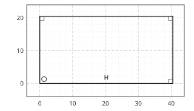
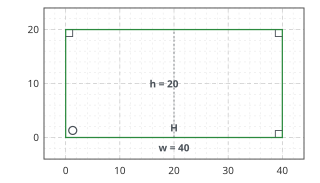
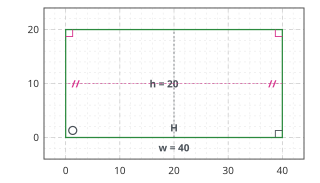
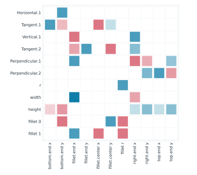
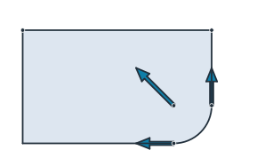
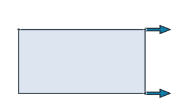
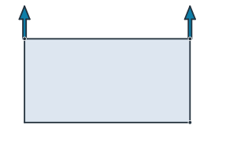

Fully, under- and over-constrained
A sketch reports how much it can still move. sk.dof counts the remaining degrees of freedom, and sk.status is "full", "under" or "over". The pictures color each element by its state: green when nothing about it can move, black when something can, and pink where constraints conflict or repeat. This page shows what each state looks like and how a sketch is made fully constrained.
[1]:
import warnings
import numpy as np
import planex as px
Under-constrained
The example is a rectangle drawn with flags only: horizontal, with three right angles, starting at the origin. Its width and height are free, which leaves two degrees of freedom (Figure 1a). With both as dimensions, it is fully constrained and green (Figure 1b).
[3]:
sk = px.Sketch()
sk.Move(sk.origin, px.Coincident).Line(40, 1, px.Horizontal, id="bottom")
sk.Line(1, 20, px.Perpendicular, id="right").Line(-40, 1, px.Perpendicular, id="top")
sk.Close(px.Perpendicular, id="left")
free = sk.Copy()
sk.Constrain("bottom", px.Distance, 40, id="w")
sk.Constrain("bottom", "top", px.Distance, 20, id="h")
print(free.status, free.dof, "->", sk.status, sk.dof)
under 2 -> full 0

(a) under: 2 degrees of freedom

(b) full: width and height
Redundant constraints
The left and right sides are already parallel because of the right angles. A Parallel constraint between them repeats that. It is consistent and the sketch still solves, so planex2d keeps it, warns, and lists it in sk.redundant together with the constraints it repeats. Its sign turns pink (Figure 2). status counts only degrees of freedom, so it stays "full". Remove takes the repetition back.
[5]:
with warnings.catch_warnings(record=True) as caught:
warnings.simplefilter("always")
sk.Constrain("right", "left", px.Parallel)
print(caught[0].message)
print(sk.status, sk.redundant)
repeated = sk.Copy()
sk.Remove("Parallel.1")
print(sk.status, sk.redundant)
Parallel.1 ("right", "left", px.Parallel) is redundant (consistent) with Perpendicular.2, Perpendicular.3
full ['Perpendicular.2', 'Perpendicular.3', 'Parallel.1']
full []

Over-constrained
A constraint that contradicts the others cannot be enforced. In the example, a diagonal of 50 disagrees with a width of 40 and a height of 20. planex2d keeps the constraint but suspends it: a PlanexWarning names the constraints it contradicts, the status is "over", and the geometry stays at its last solution. The suspended constraint and the ones it contradicts are drawn in pink. Face() and the exports still work on the last solution, with a warning.
[7]:
with warnings.catch_warnings(record=True) as caught:
warnings.simplefilter("always", px.PlanexWarning)
sk.Constrain("bottom.start", "top.start", px.Distance, 50, id="diagonal")
print(caught[0].message)
print(sk.status, sorted(sk.dimensions))
"bottom.start", "top.start", px.Distance, 50: no solution, it contradicts the constraints there are (Perpendicular.1, Perpendicular.2, w, h); diagonal is kept but not solved, the sketch is over-constrained
over ['diagonal', 'h', 'w']
Every later Update tries the suspended constraint again. A rectangle 40 × 30 has a diagonal of exactly 50, so with the height changed to 30, the diagonal fits and is enforced, and the sketch is fully constrained again. The diagonal now repeats what the width and the height already fix, so it is redundant, and a warning says so. Removing the suspended constraint, or one it contradicts, also ends the conflict.
[8]:
sk["h"] = 30
sk.Update()
print(sk.status, sk.Measure("bottom.start", "top.start")["distance"])
full 50.0
PlanexWarning: diagonal ("bottom.start", "top.start", px.Distance, 50) is redundant (consistent) with Perpendicular.1, Perpendicular.2, w, h
Strict mode
Exporting an under-constrained sketch is usually a mistake, because the part then has whatever size the drawing happened to have. Sketch(mode="strict") refuses every export while the sketch can still move, and the error states what is free. Reading remains allowed, including positions, measurements and pictures. Strict mode also turns a change of branch into an error (see changing dimensions), so an unattended loop never produces a silently flipped part.
[9]:
sk = px.Sketch(mode="strict")
sk.Move(sk.origin, px.Coincident).Line(40, 0, px.Horizontal, id="bottom")
sk.Line(0, 20, px.Perpendicular).Line(-40, 0, px.Perpendicular, id="top")
sk.Close(px.Perpendicular)
try:
sk.Face()
except ValueError as e:
print(e)
sk.Constrain("bottom", px.Distance, 40, id="w")
sk.Constrain("bottom", "top", px.Distance, 20, id="h")
print(sk.status, sk.Face().mass)
Face(): mode='strict' and the sketch is not fully constrained (2 degrees of freedom; free: bottom, Line.1, top, Line.2)
full 800.0
Condition
sk.condition states how strongly a small change of the dimensions can move the geometry. A well-posed part, like this rectangle, stays at a few units. A large value means that some point depends on nearly parallel lines or nearly tangent circles, so a tiny change of a dimension moves it far. planex2d warns above px.config.sensitivity_warning.
[10]:
print(f"condition {sk.condition:.3f}")
condition 2.864
The Jacobian
sk.jacobian is the matrix the solver works with. It has one row per equation and one column per unknown, and each entry is the derivative of that equation with respect to that unknown at the solved geometry. Rows are labeled by their source, (constraint id, row), and columns by what they move, (reference, coordinate). The matrix is a scipy sparse array. scale holds the scaling of its columns, and the raw derivatives are matrix[:, k] / scale[k]. The plate from the section
overview has eleven unknowns and eleven equations, and every equation involves only a few of the unknowns (Figure 3).
[11]:
from scipy.sparse.linalg import spsolve
plate = px.Sketch(id="plate")
plate.Move(plate.origin, px.Coincident)
plate.Line(37, 2.5, px.Horizontal, id="bottom").Arc(9, 95, px.Tangent, id="fillet")
plate.Line(-1, 17, px.Vertical, px.Tangent, id="right")
plate.Line(-46, 3, px.Perpendicular, id="top").Close(px.Perpendicular, id="left")
plate.Constrain("fillet", px.Radius, 10, id="r")
plate.Constrain("bottom.start", "right", px.Distance, 50, id="width")
plate.Constrain("bottom", "top", px.Distance, 30, id="height")
J = plate.jacobian
print(J["shape"], J["matrix"].nnz, "of", J["shape"][0] * J["shape"][1], "entries")
print(J["rows"][:3], "...")
print(J["columns"][:3], "...")
(11, 11) 63 of 121 entries
[('Horizontal.1', 0), ('Tangent.1', 0), ('Vertical.1', 0)] ...
[('bottom.end', 'x'), ('bottom.end', 'y'), ('fillet.end', 'x')] ...

What a dimension moves
The equation of a dimension states that the measured length equals the set value, so changing the dimension by one puts a one on the right-hand side of its row. Solving J dx = e for that row gives how far every unknown moves per unit of the dimension. For the fillet’s radius r, the bottom line ends one unit earlier, the right side starts one unit higher, and the arc’s center moves one unit to the left and one up (Figure 4). A finite difference of two Updates gives the same result.
[13]:
rows, columns = J["rows"], J["columns"]
unit = np.zeros(J["shape"][0])
unit[rows.index(("r", 0))] = 1
dr = J["scale"] * spsolve(J["matrix"].tocsc(), unit)
for (ref, c), d in zip(columns, dr):
if abs(d) > 1e-12:
print(f"d {ref}.{c} / dr = {d:+.12f}")
h = 1e-4
up, down = plate.Copy().Update({"r": 10 + h}), plate.Copy().Update({"r": 10 - h})
fd = (up.Location("fillet.center")[1] - down.Location("fillet.center")[1]) / (2 * h)
k = columns.index(("fillet.center", "y"))
print(f"fillet.center.y: Jacobian {dr[k]:.12f}, finite difference {fd:.12f}")
d bottom.end.x / dr = -1.000000000000
d fillet.end.y / dr = +1.000000000000
d fillet.center.x / dr = -1.000000000000
d fillet.center.y / dr = +1.000000000000
d fillet.r / dr = +1.000000000000
fillet.center.y: Jacobian 1.000000000000, finite difference 0.999999999944

Free motions
An under-constrained sketch has fewer independent rows than columns. sk.dof is the number of columns minus the rank of J, and the null space of J holds the motions that change no equation. For the rectangle drawn with flags only, at the top of this page, these are its free width and its free height (Figure 5).
[15]:
from scipy.linalg import null_space
Jf = free.jacobian
raw = Jf["matrix"].toarray() / Jf["scale"]
print(free.dof, "=", raw.shape[1], "columns -", np.linalg.matrix_rank(raw), "rank")
motions = null_space(raw)
print(motions.shape[1], "free motions")
2 = 6 columns - 4 rank
2 free motions

(a) Free motion: the width

(b) Free motion: the height
A redundant constraint adds a row but no rank. With the Parallel that repeats the right angles, the plate’s matrix has twelve rows but a rank of eleven, and sk.redundant names the rows that depend on each other.
[17]:
with warnings.catch_warnings():
warnings.simplefilter("ignore")
plate.Constrain("right", "left", px.Parallel)
Jr = plate.jacobian
print(Jr["shape"], "rank", np.linalg.matrix_rank(Jr["matrix"].toarray()))
print(plate.redundant)
(12, 11) rank 11
['Perpendicular.1', 'Perpendicular.2', 'Parallel.1']